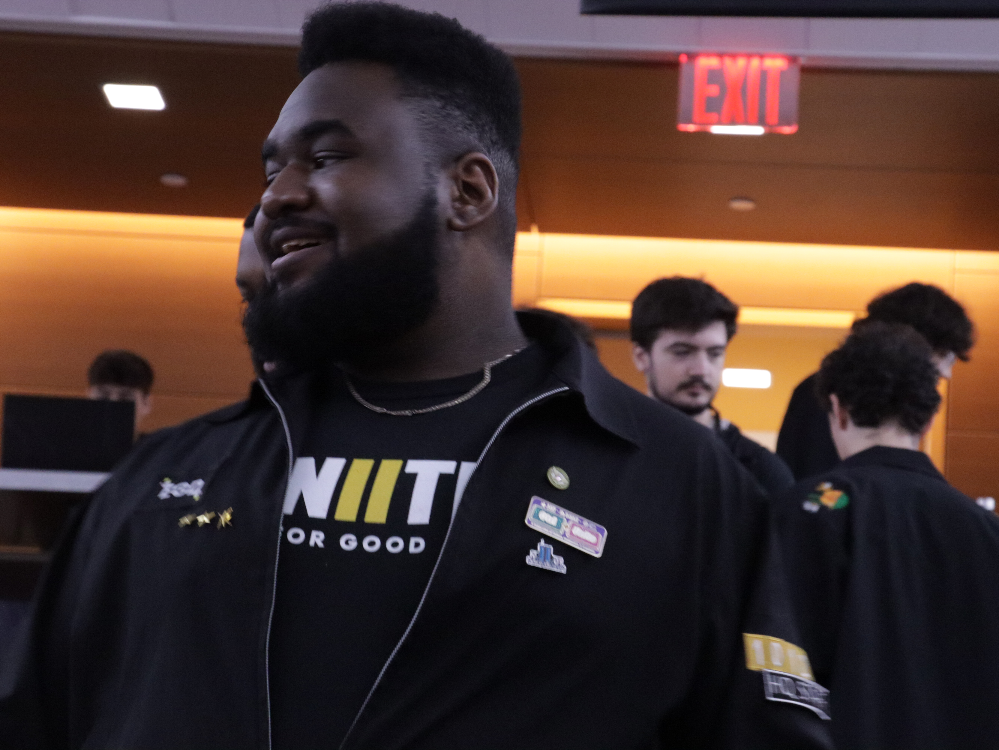
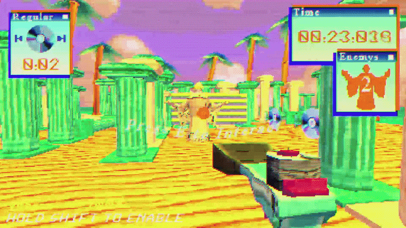
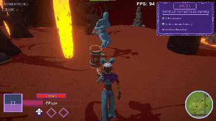
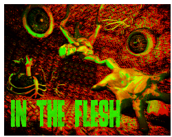
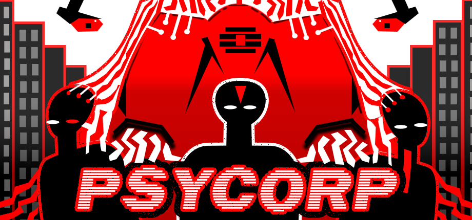

Game Designer & Programmer
Charon's Corner
Charon's Corner is a high-speed 3D cart-racing project that reimagines Greek mythology's ferryman of death as a bowler who sends souls to the afterlife by bowling their skulls down a bowling lane.
Technical game designer · Unity developer
I build gameplay systems that turn creative ideas into responsive, playable experiences. From combat balancing to procedural worlds, I bridge game design and software engineering.


I’m Brandon Smith, a technical game designer pursuing an MFA in Integrated Media Arts at Hunter College. I focus on gameplay systems, technical design, and tools that give designers more control as they iterate.
My work bridges game design and software engineering. Across more than 20 projects, I’ve built gameplay systems, AI, editor tools, procedural features, and designer-facing pipelines in Unity, Unreal Engine, and Godot. I value clear workflows, scalable systems, and player-focused design.
I work at EGD Collective as an Award Coordinator and Advisor, supporting emerging developers through mentorship, events, project guidance, and industry pathways. Over the summer, I also worked with Glik Games on technical development for PSYCORP and contributed to Glikit, a set of Unity tools for narrative and designer-driven content.
Outside of development, I enjoy experimenting with systems, cooking for friends, listening to house music, and playing Warframe.
Game Designer & Programmer
Charon's Corner is a high-speed 3D cart-racing project that reimagines Greek mythology's ferryman of death as a bowler who sends souls to the afterlife by bowling their skulls down a bowling lane.

Technical Designer
Birds of Impalitism is a vaporwave, momentum-based first-person shooter where movement doubles as combat. Set in the decaying Palamus Mall, players uncover Maria Gomez's cultist past through kinetic, replayable gameplay.

Enemy Designer & Programmer
Project Dreamscape is a surreal 3D hack-and-slash roguelite where you shape your dreamworld and powers while battling inner demons. Expand your dream one land at a time and unleash combos with a shape-shifting hammer to survive the night.

Technical Designer
A flesh-eating parasite has overtaken an abandoned spaceship. Tunnel through living flesh, uncover hidden organs, and grow powerful enough to tear through tougher layers and reach new areas.

Technical Designer · In development
A narrative walking simulator about three siblings, AI cybernetics, and a surveillance empire. A Unity project in development. Each implant amplifies its owner's worst traits as the siblings battle for control of a surveillance empire.